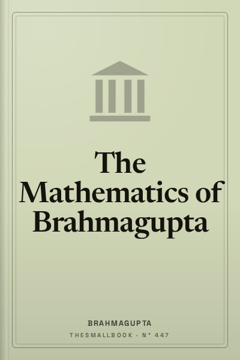

The Mathematics of Brahmagupta
The ancient Indian mathematical foundation of modern computing.
READ FULL BREAKDOWN (FREE) →The Big Idea
Zero and negative numbers are not mathematical voids; they are operational forces of balance, debt, and resolution.
Key Lessons
The Invention of Operational Zero
Brahmagupta transformed zero from a mere punctuation mark into an active mathematical number with operational laws.
The Law of Fortunes and Debts
Treating positive numbers as fortunes and negative numbers as debts made arithmetic mirror commerce cleanly.
Quadratic Solutions
Formulating the standard general solution for quadratic equations unlocked engineering and astronomy.
Cyclic Quadrilaterals
Deriving exact formulas for the area and diagonals of four-sided figures inscribed in circles.
The Bhavana Composition Law
Composing two solutions to indeterminate equations to instantly generate infinite further solutions.
Rigorous Astronomical Observation
Mathematical theory must match observed planetary positions in the night sky without dogma.
Rejection of False Authority
Challenging earlier established texts when mathematical proof demonstrated errors.
The Legacy of Universal Truth
Mathematical principles remain valid across millennia, untouched by politics or borders.
The Graveyard Proves It
Where this advice breaks: Where this advice breaks: abstract algebraic elegance must still confront physical realities and friction in real world execution.
Read the autopsy: thomas-cook →